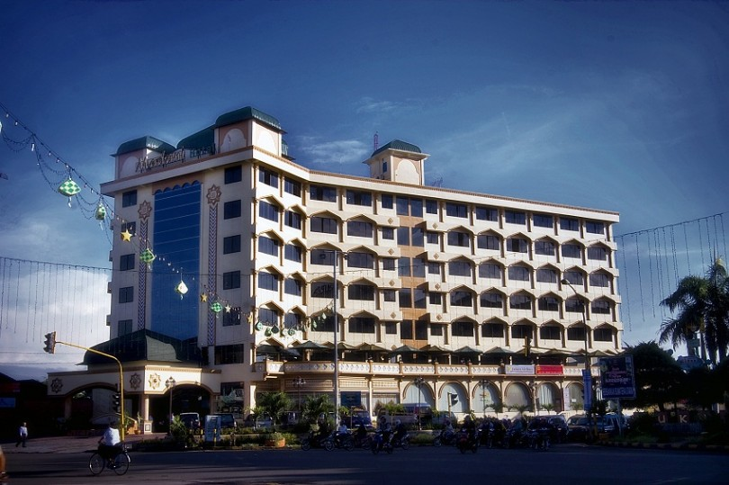
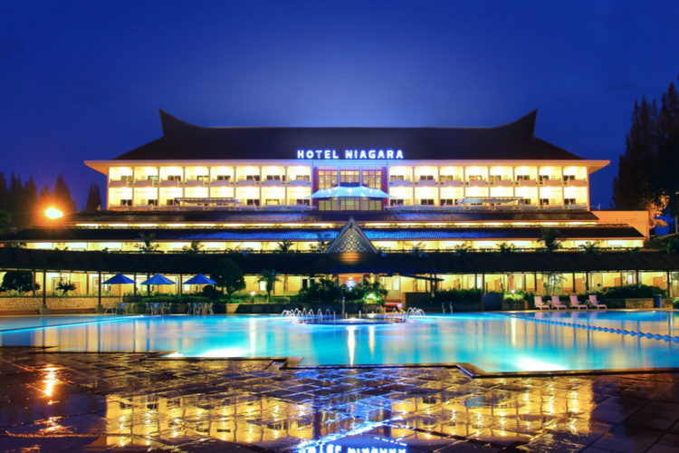
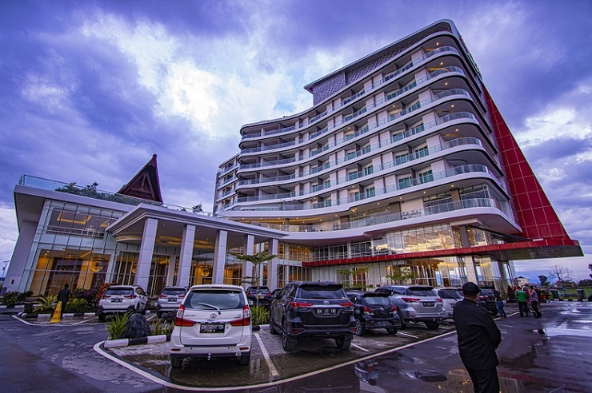

HOTEL MADANI MEDAN

Hotel Madani Medan adalah Hotel Berbintang 4 dengan kenyamanan yang baik bagi para pengunjung
yang datang ke hotel tersebut. Bagaimana cara saya ke Madani Syariah Hotel?
Madani Syariah Hotel mudah diakses dari bandara. Anda juga bisa memesan shuttle bandara sebelumnya
untuk kenyamanan Anda. Silakan gunakan bagian "Beri tahu kebutuhan Anda" pada halaman pemesanan
untuk memberitahukan pihak hotel bahwa Anda ingin memesan transportasi, dan mereka akan menghubungi
Anda melalui layanan pesan Agoda mengenai biaya tambahan dan informasi lebih lanjut.
Menginap di Madani Syariah Hotel juga menawarkan kemudahan akses ke area sekitar hotel menggunakan layanan
shuttle yang ditawarkan di hotel. Bagi tamu yang ingin mengendarai mobil pribadi, Madani Syariah Hotel
menyediakan area parkir untuk tamu. Parkir tersedia gratis untuk tamu. Jika Anda ingin berkeliling Medan
dengan mudah menggunakan transportasi pribadi, pihak hotel dapat menyediakan sewa mobil untuk Anda.
Hotel Madani Medan berlokasi Jl Sisingamangaraja Jl Amaliun No 1,
Kotamatsum III, Kecamatan Medan Kota, Kota Medan, Sumatera Utara 20215.
HOTEL NIAGARA PARAPAT

Hotel Niagara Parapat adalah Hotel Berbintang 5 dengan kenyamanan dan keindahaan yang baik
dengan view dan pemandangan yang begitu indah bagi para pengunjung
Menginap di Hotel Niagara Parapat juga menawarkan kemudahan akses ke area
sekitar hotel menggunakan layanan shuttle yang ditawarkan di resort.
Bagi tamu yang ingin mengendarai mobil pribadi, Hotel Niagara Parapat menyediakan area parkir
tidak jauh dari resort. Parkir tersedia gratis untuk tamu.
Jika Anda ingin berkeliling Parapat dengan mudah menggunakan transportasi pribadi,
pihak resort dapat menyediakan sewa mobil untuk Anda. Hotel Niagara Parapat berlokasi Jl Pembangunan
No 1, Kecamatan Girsang Sipangan Bolon, Kabupaten Simalungun, Sumatera Utara 21174.
HOTEL LABERSA BALIGE

Hotel Labersa Balige adalah Hotel Berbintang 5 dengan kenyamanan dan keindahaan yang baik
Hotel Labersa memiliki kesamaan view yang indah dengan Hotel Niagara Parapat
Hotel ini dilengkapi dengan water park dan kolam renang. Hotelnya bagus, bersih dan menjalankan
Prokes di masa pandemi. Pelayanannya bagus, staf ramah. Di lantai 2 terdapat ruang makan terbuka
dengan pemandangan Danau Toba yang indah, bagus untuk spot foto. Makanan di hotel ini enak dengan
harga termasuk murah untuk ukuran hotel bintang 5.Hotel Labersa Balige berlokasi Saribu Raja Janji Maria,
Kecamatan Balige, Toba, Sumatera Utara.